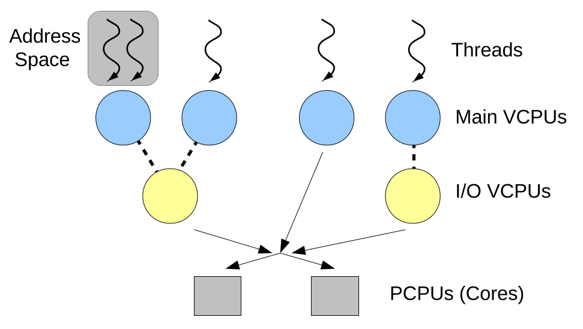
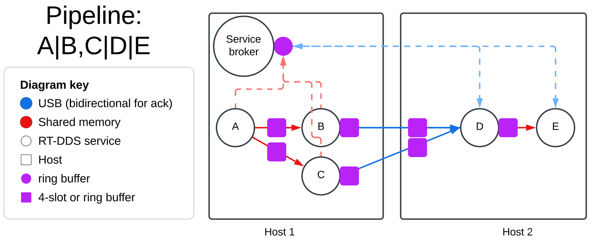

RT-USB Streaming Protocol
| ../ | DESIGN |
Problem statement
Problem definition
Safety-critical systems and manufacturing workloads in factories require timing and predictability guarantees for proper execution. For example, an autonomous car reading lidar sensor data requires end-to-end latency guarantees within a margin to be able to stop when detecting a pedestrian. Similarly, in precision manufacturing pipelines of microprocessors, robots need to be synchronized to a high degree degree of accuracy to ensure no anamolies in coordinated execution.
Currently, ROS2 (Robot Operating System 2) is the de-facto pub-sub framework for robotics systems. The issue with ROS2 is that there may be hardware interrupts that disrupt proper execution flow, so end-to-end latency guarantees are weak.
The problem is that there is no data distribution service (DDS) that provides real-time guarantees.
Problem importance
We need a real-time DDS for safety critical systems to ensure predictability guarantees in workload executions. The aformentioned examples of factories and autonomous vehicles are clear demonstrations of this need; however, a real-time DDS also has many applications in optimizing workloads in e.g. high frequency stock trading, or cluster coordinated execution. Scheduling work on nodes with time as a first-class resource enables power efficiency and deterministic CPU utilization (c.f. Rate-Monotonic Scheduling). Therefore, a real-time DDS that scales across nodes may lay the groundwork for building a scalable, highly-efficient supercomputer.
Who benefits from solving this?
Proposed solution
In the Quest Lab we have been developing RT-DDS, a real-time pub-sub data distribution service, which provides strong end-to-end latency and throughput guarantees through exploiting the Quest VCPU (Virtucal CPU) construct that ensures timing and predictability in task execution. Upon an interrupt, Quest spawns an IO VCPU with equal priority to the Main VCPU that was preempted, and handles the bottom-half of the interrupt in parallel to allow for near-seamless execution of the Main VCPU's task.
We propose RT-DDS across hosts as the first real-time DDS to span hosts and provide coordinated execution with end-to-end latency requirements. We will use USB links to connect nodes and communicate host-to-host using the USB extensible debug cabability (xDbC), first on Linux, then on Quest to provide stronger timing and predictability guarantees than ROS2. Using xDbC we will need to construct a real-time USB protocol which incorporates acknowledgements for replicating the state of the endpoint buffers on each host as well as provide a scheduling mechanism at the OS USB driver level for rate-matched transfers.

Figure 1: From boomerang paper; processes which contain thread(s) bound to a VCPU (Main), which is bound to a PCPU (core). Each Main VCPU may have a corresponding IO VCPU with the same budget C and period T to handle the bottom-half of interrupts.
We can guarantee end-to-end latency requirements because of the Quest VCPU construct because Quest schedules processes with RMS (Rate Monotonic Scheduling) using the Liu & Layland upper bound, which guarantees that a feasible schedule that will always meet deadlines exists if the CPU utilization is below a specific bound. Additionally, the bottom half of interrupts are handled by IO VCPUs so Main VCPUs can execute with negligible performance impact upon an interrupt.
With these timing and predictability guarantees at the operating system level, given an end-to-end latency \(e\), RT-DDS binds each task in the pipeline to a VCPU of period \(T=e/num\_pipeline\_stages\) to rate match all services in the pipeline (they produce 1 unit of work, reading from all inputs, processing the inputs, and writing to all outputs, at the same rate) oand \(C=max\_execution\_time(f)\) where \(f\) is the service's function and a pipeline stage is a stage in the pipeline where the services in it can execute in parallel (i.e. they have all the data they need). c.f. topological sort, see 2 where the 4 pipeline stages are vertically aligned; services \(B\) and \(C\) are in the same stage.
Expectations
Pub-sub with end-to-end and throughput latency guarantees
Currently RT-DDS is limited to a single host, with data streaming across shared memory communication; however, enabling RT-DDS to span across hosts on Linux will situate it as a mainstream alternative DDS to ROS2. Upon completion of this project, strong real-time guarantees will become available for cluster-level coordinated execution for the first time.
Experimental plan
Linux does not provide the same timing guarantees as Quest; however, for fair comparison we will first compare RT-DDS on Linux against ROS2 on Linux. Then we will do a comparison of RT-DDS on Quest against ROS2 on Linux to demonstrate the strength of running the DDS on a real-time OS.
Datasets
All of our data will be audio data, which on which we will apply digital signal processing (DSP) functions from the soundpipe library.
Experiments
All experiments will aim to minimize the end-to-end latency, so hopefully on the order of magnitude of 100s of microseconds per audio sample batch. 44khz is 25 microseconds per sample, but if we cannot achieve that, then we can batch samples at a lower frequency.
- 1khz sine wave (unsigned 16 bit), 2 services:
- Pub1 (Host 1): read and stream
1khz_sine.raw - Sub1 (Host 2): read from Pub1 over USB and flush to a Teensy 4.1 board connected to an audio sink to play the audio data
- Pub1 (Host 1): read and stream
- complex DAG with synchronized merging of audio (from 1): \[A|B,C|D|E\] where | is a subscription, and B|C,D|E means C and D subscribes to B and E subscribes to C and D (See the figure below)

Figure 2: Diagram of \(A|B,C|D|E\). Bidirectional communication over xDbC for acks on buffer state. (Simpson's) 4-slot buffers are for asynchronous communication and ring buffers for synchronous.
Deploy environment
We will be running experiments on 64-bit Ubuntu Linux standalone for ROS2 and 32-bit Yocto Linux as a guest on the Quest-V hypervisor, or possibly standalone Linux if time allows, for RT-DDS. For a Quest RT-DDS workload, we will do this on both Quest standalone, and Quest as a Quest-V guest to demonstrate minimal overhead.
How confirm hypothesis
- Measure end-to-end latency and throughput of DDS during both normal execution and under background process interrupts, e.g. heavy I/O reading other files in tasks outside of the pipeline.
- Spectrum analyzer for teensy audio sink to see that the 1khz sine is preserved and pure.
- Audio sample sounds good to the ear, we may use a pop song to demonstrate the synchronization of the split and merge in experiment 2.
Equipment
- 2 DX1100 32-bit hosts
- USB link
- Teensy microcontroller
- audio sink
- spectrum analyzer (currently have an oscilloscope, need to ask to borrow from Professor Mancuso possibly)
Success indicators
Outcome of work
RT-DDS works across hosts over USB xDbC. First implemented real-time DDS available.
Task assignment/milestones
[2/23, 3/02)
- RT-DDS working on Linux over Quest-V, single host
- draft of USB RT-packet streaming protocol
[3/02, 3/09)
- begin implementation of USB RT-packet streaming protocol
[3/07, 3/14)
- finish implementation of USB RT-packet streaming protocol
[3/14, 3/20)
- implement both experiments for RT-DDS
3/20: Midterm presentation due
[3/21, 3/28)
- implement both experiments on ROS2
[3/28, 4/04)
- Spectrum analyzer analysis and timing analysis of experiments
[4/04, 4/11)
- RT-DDS on Linux standalone
[4/11, 4/18)
- Write up presentation
[4/18, 4/22)
- Finish any unfinished tasks
4/23: Final presentation due
Relevant papers
- A. Eisenklam, W. Hedgecock and B. C. Ward, "Job-Level Batching for Software-Defined Radio on Multi-Core," in 2024 IEEE Real-Time Systems Symposium (RTSS), York, United Kingdom, 2024, pp. 375-387, doi: 10.1109/RTSS62706.2024.00039.